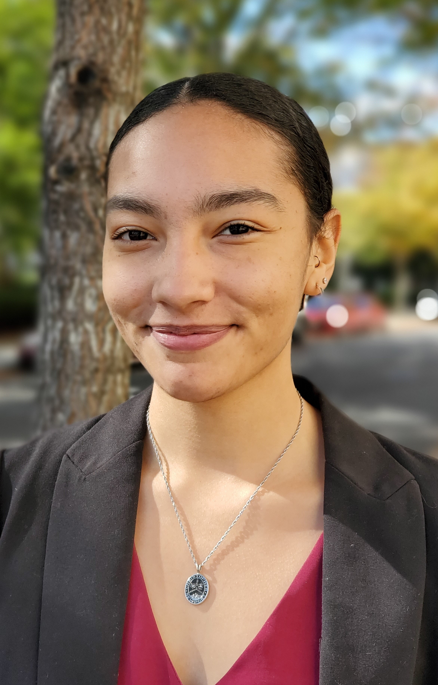
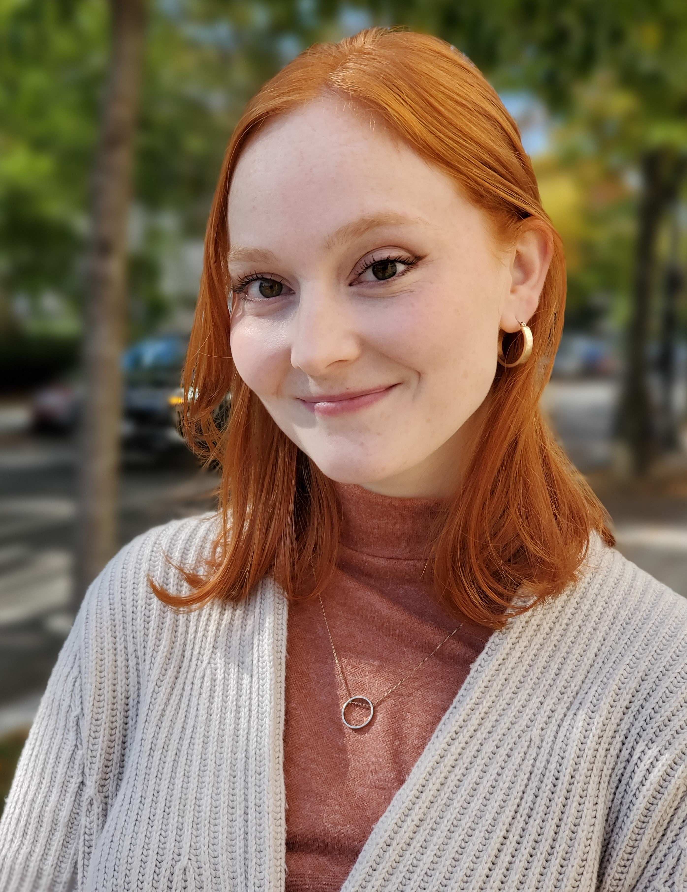
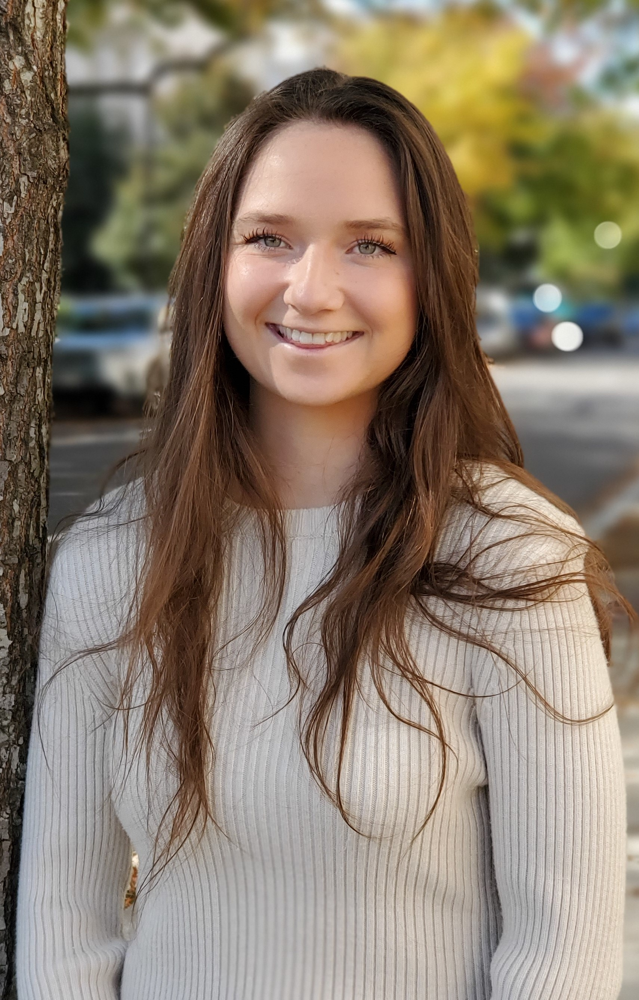
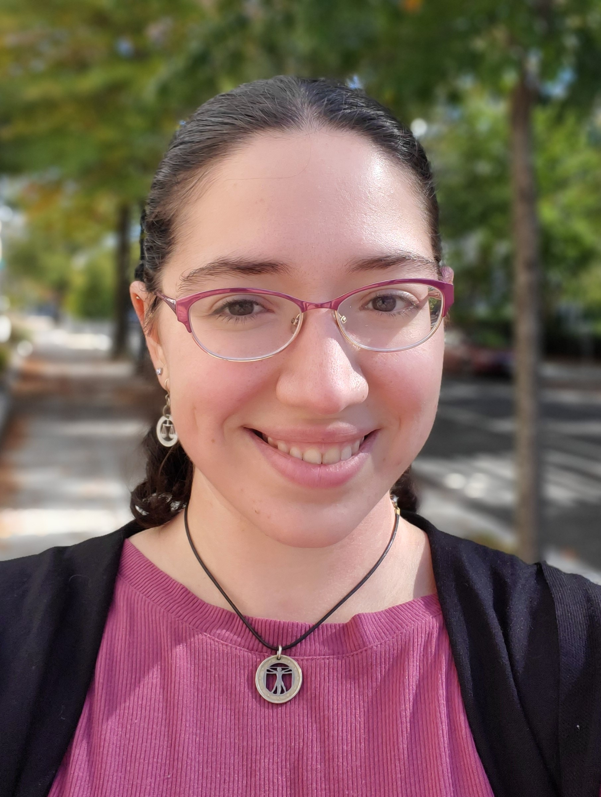
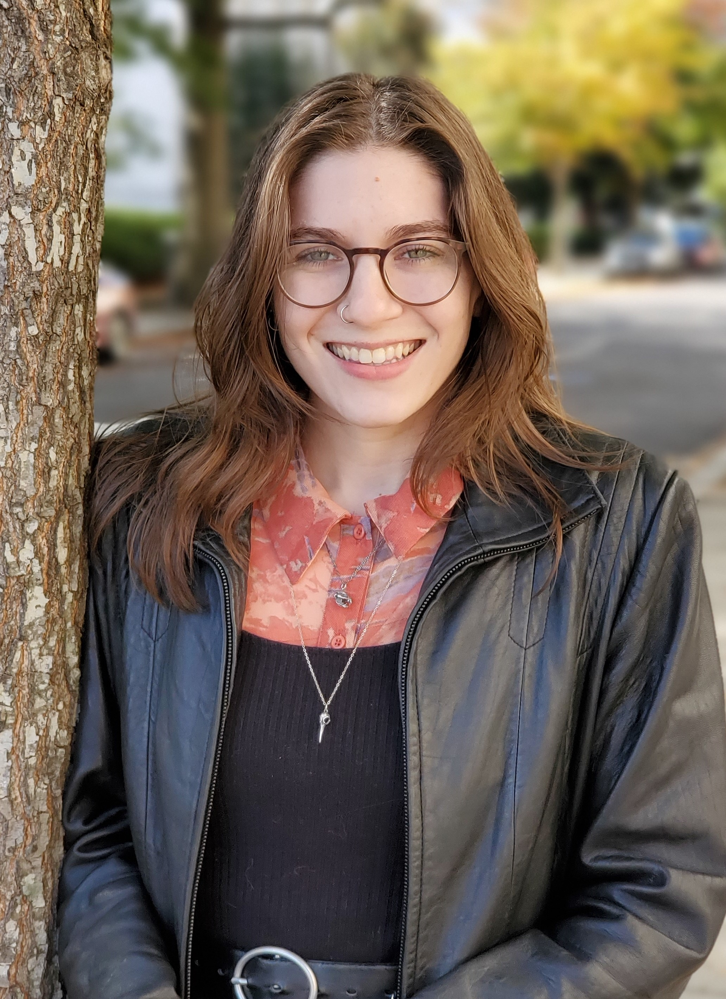
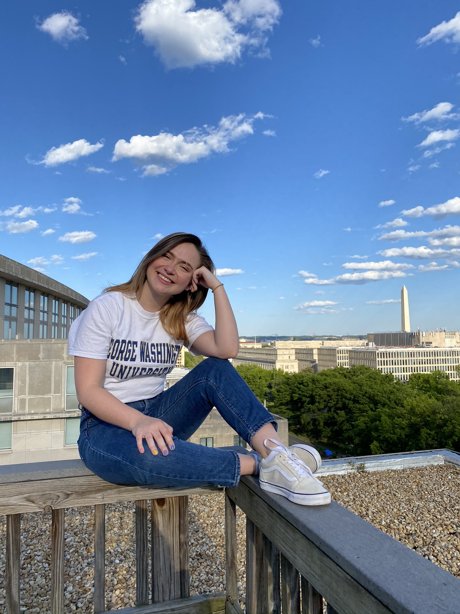
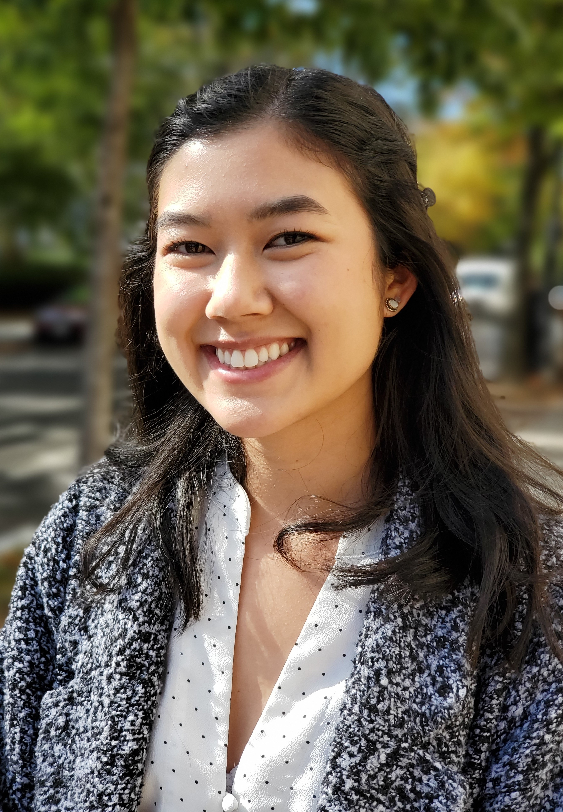
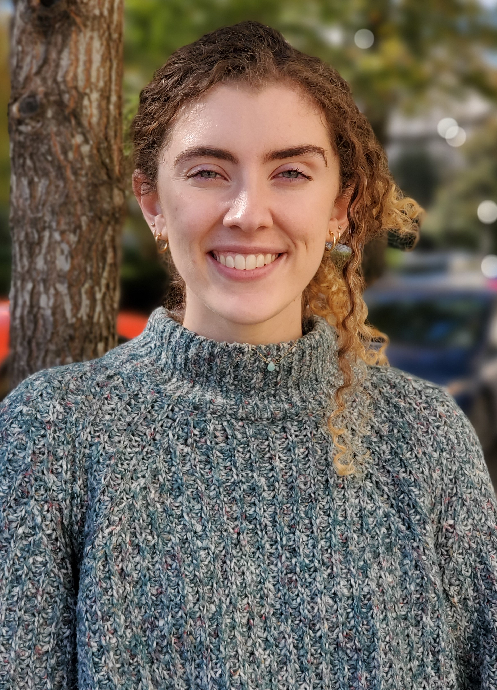

Contributors
-
Suse AndersonDr. Suse Anderson (She/Her) is Assistant Professor, Museum Studies at The George Washington University and producer museopunks–the podcast for the progressive museum. A former President of MCN, Anderson teaches courses related to museums and technology, ethics and visitor experience. She holds a PhD from The University of Newcastle, Australia. Connect on Twitter.
-
Ashley ChenAshley Chen is pursuing a M.A. in Museum Studies with a concentration in Public Engagement and holds B.A.s from U.C. Berkeley in Physics and Art History, with an Asian Art focus. She has six years of experience teaching children a variety of subjects including science, math, music, and art in different learning environments such as museums and after-school programs. Her interests include museum education and public programming, feminist art history, and making STEAM more accessible.
VI. Prioritizing Creativity & Soft-Skills in Museum Makerspaces
-
Montana CowardMontana Coward is a first year masters student at George Washington University, pursuing a degree in Museum Studies with a focus on collections management. She earned her B.A. in History at Christopher Newport University. She is devoted to exploring new ways of making museums' collections more accessible for all.
XII. Apps and Autism: Mobile Applications Creating Accessibility in Museums
-
Erin DietrickErin Dietrick is a first year Museum Studies student within the Public Engagement concentration. She received her B.A. in History from the University of Rochester in Rochester, New York and is passionate about fostering meaningful connection between the public and their local museums. She believes in the importance of lifelong learning and wants to find new ways for people of all ages to engage with history.
X. Engaging the Public During a Worldwide Pandemic: A Critique of the Virtual Museum Tour
-
Maura DunnMaura Dunn is currently a first year graduate student at the George Washington University with a focus in Exhibitions and Visitor Experience. She received her undergraduate degree in History from the University of South Carolina and moved to Washington D.C. in August 2020. Maura strives to one day work for the Smithsonian American History Museum here in D.C. Email: maurad@gwu.edu.
XV. The Mutually Beneficial Relationship Between Influencers and Museums
-
Saskia GirammaSaskia is a second year grad student in the Exhibition Design program at George Washington University. Her background is in design and production for live theater, specifically lighting design and stage management. She is from New England, but now resides outside of Washington DC in Alexandria, VA. She is interested in exhibition lighting, interactive multi-media, digital 3D modeling, and universally accessible design.
-
Claire GriffinClaire Griffin is currently a first year graduate student in the Museum Studies program at George Washington Univerty. She earned her B.A. in Anthropology from Indiana University. She is dedicated to pursuing equity in historical narratives and creating a more inclusive spaces for the communities we serve. Connect by email.
-
Haley HigingbothamHaley Higingbotham is a Museum Studies graduate student at George Washington University, concentrating in Collections Management. She received undergraduate degrees in History and Classics from the University of Georgia. An emerging museum professional, Haley currently works at the Special Collections Research Center at the George Washington University as a Digitization Assistant and at Dumbarton House as a Event and Public Programs Assistant. Email: hmhigingbotham@gmail.com Twitter: @museofmuseums
VII. Cave Albam Artes: The Utilization of Technology to Showcase the Polychromy of Ancient Art
-
Zhujun HouBorn in Shenyang, China, Zhujun Hou is an international student in the Museum Studies Program, focusing on museum exhibition and visitor’s experience. She got her Bachelor degree in Art History and minor in ceramic from Centre College in Danville, Kentucky. Zhujun is really interested in Buddhist cave arts (Dunhuang Mogao Caves), Asian art and museum curatorial works in general. Email: asteriahou@gmail.com Instagram: houzhujun.
-
Matthew LynchMatt Lynch is a graduate student at George Washington University on the visitor experiences track. He hopes to eventually curate at a history museum or historic house/site. Before GW, he worked in non-profit marketing for five years and received his BA in History at Cornell University with a focus on the Near/Middle East.
-
Madeline MungoMadeline Mungo is a first-year Museum Studies student at George Washington University. Raised in small-town Texas, she received her B.A. in Liberal Arts concentrated in Art History and Museum Ethics from Sarah Lawrence College in Bronxville, NY, as well as spending a semester at the Institute of Archaeology through University College London in 2020. She has a particular interest in museum ethics and a long-held love of Ancient Egyptian and Near Eastern Art. Connect on Twitter.
-
TJ NewTerrance New is a second-year Master’s candidate in Anthropology with a concentration in Museum Studies and holds a B.S. from the George Washington University in Biological Anthropology. His research interests include the ecology and evolution of early humans, primatology, and public engagement with science.
-
Megan NguyễnMegan Nguyễn is a first-year graduate student pursing a degree in Museum Studies at George Washington University, with a focus on Exhibition and Visitor Experience. She believes 21st century museums are spaces for continued learning, creative storytelling, human connection, and social justice. Megan commits herself to examining museology with equity at the forefront, and hopes to provide more engaging and inclusive experiences to the next generation of museum visitors.
-
Kate RiceKate Rice is a second year Museum Studies student at the George Washington University. With her concentration in Museum Management, Rice hopes to work in project management or development after graduation in May 2021. Rice has previously interned with the National Asian Art Museum and the George Washington University Museum and the Textile Museum.
XIII. Crowdfunding the Museum: Fundraising for Museums in the Digital Age
-
Jake SanfordJake Sanford is a first-year Museum Studies student at George Washington University and is currently working on an upcoming exhibit at the National Museum of American History. He is 23 years old and focused on making sure that the museum of the future is a just and accessible space for all. He wants to thank Julia Beu, without whom this work would not exist, and the many experts whose diligent research helped him immensely in shaping this piece.
III. Turning a Blind Eye to Design: Technology and Visual Impairment In Modern Museums
-
Norman Storer CorradaNorman Raúl Storer Corrada (he/him/his) is a second-year Museum Studies master’s student at the George Washington University. He is originally from San Juan, Puerto Rico. After graduating with a BA in Archaeology and Romance Languages & Literatures from Harvard University, he completed a Humanities Fellowship at Dumbarton Oaks and Smithsonian Folkways Recordings. He is currently a virtual museum teacher at Planet Word.
II. Capturing Complexity: Activating Musical Instruments in Online Museum Collections
-
Hannah StubeeHannah Stubee is a first year Museum Studies masters student with a concentration in collections management at George Washington University. Originally a painter, she received a BA in Studio Art at Lewis & Clark College, where she gained an appreciation for the power of objects from a maker’s perspective. Hannah went on to assist painting conservator, Nina Olsson, and transcribed oral histories for Vietnamese Portland. She currently works at George Washington University’s Visual Resource Center.
IV. Effectiveness of 3D Digitization as a Tool for Indigenous Cultural Heritage Preservation
-
Devon ValeraDevon Valera is a second year Museum Studies graduate student at George Washington University. She received her B.S. in Biopsychology from Tufts University in 2019. She is currently the Curatorial Assistant at the National Institute of Health’s Office of NIH History and Stetten Museum as well as an intern with the Education and Outreach Department at the National Museum of Natural History. Passionate about science communication, she values institutions that center accessibility and community engagement.
I. Socially Distanced, Virtually Connected: Digital Collecting During COVID-19